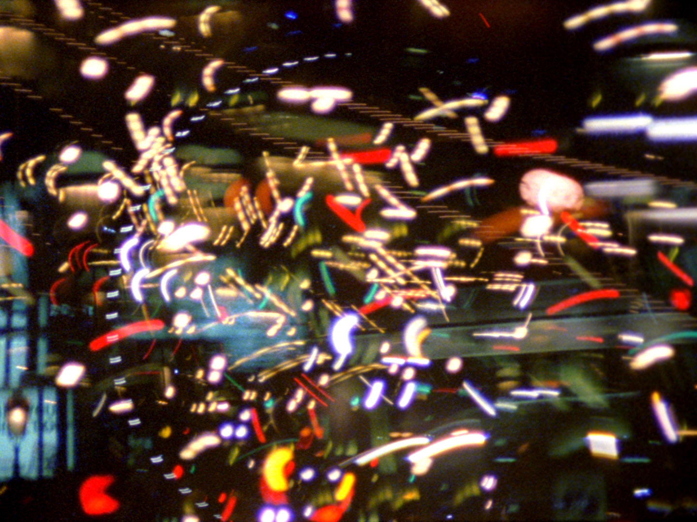

Back

Welcome To Southside
2004, 16mm, color, silent, single screen, 3' 03
Statement
A silent nocturnal voyage to the Southside of London exposed 36 times onto one roll of film. Navigating by urban constellations the frame clings to the familiar. It is an unedited study of repetition, an act of faith and a souvenir of my journey home.
Welcome To Southside preview
Distribution
16mm, DCP, digital file
Lightcone distribution page for Welcome To Southside
Screenings
- 2015: Analogue Recurring, London
- 2013: Mire, Nantes, France
- 2010: Flatpack Film Festival, Birmingham
- 2009: London Short Film Festival, UK
- 2009: Festival des Cinémas Différents, Paris
- 2009: Reading Experimental Film Festival, UK
- 2009: Visions in the Nunnery, The Nunnery Gallery, London
- 2009: Leftfield and Luscious, ICA & Tenderpixel Gallery, London
- 2009: Nice Film Festival, France
- 2008: Abstracta, Teatro dell'Accademia, Rome
- 2008: Videocreación, Canariasmediafest, Las Palmas
- 2008: Imprint, Mir Festival, Athens
- 2008: Weiterstadt Outdoor Film Festival, Germany
- 2005: International Art Film Festival, Trenčianske Teplice, Slovakia
--
Website and all content copyright Christopher Steel 1996-2024